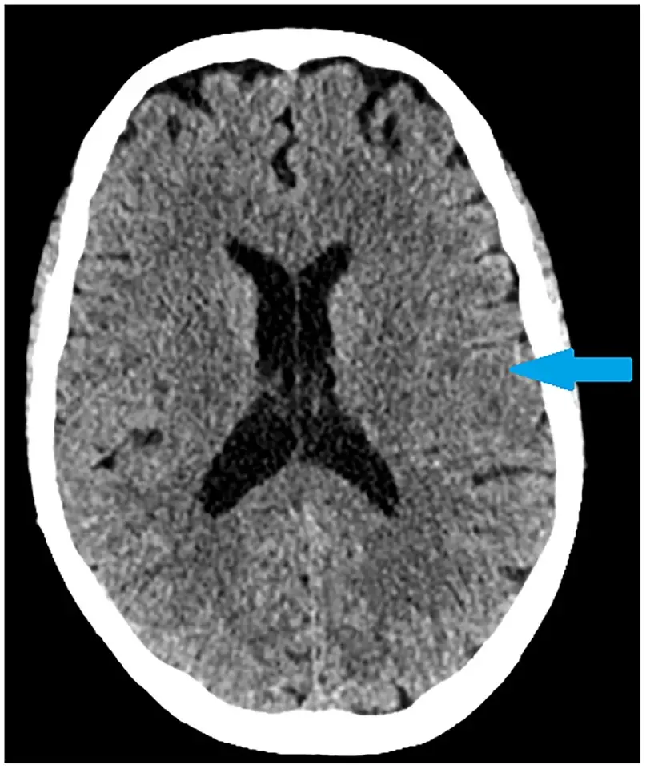

DX.8 — Événement neurologique (AVC, crise)
1. Définition
Un événement neurologique aiguDéficit ou trouble de conscience d'apparition brutale d'origine cérébrale : AVC (ischémique ou hémorragique) ou crise épileptique. Il altère la conscience, la mobilité et le comportement protecteur contre le froid. est ici une cause d'hypothermie accidentelleBaisse involontaire de la température centrale sous 35 °C1. Elle est primaire (exposition seule) ou secondaire (maladie, intoxication, traumatisme). secondaire. Le patient reste immobile, ne se couvre pas et ne frissonne pas assez.1
2. Épidémiologie (Suisse, puis Europe)
À Berne, 23 des 439 hypothermies accidentelles (≤ 35 °C) présentaient un événement neurologique, soit 5,2 % (Habegger 2022)2. Les causes se cumulent, donc ce taux n'est pas un rang. Ce groupe est le plus âgé, le plus féminin et l'un des plus létaux2. En Europe, l'incidence est de 0,13 à 6,9 cas pour 100 000 habitants par an (Paal 2022)1. Le froid retarde l'alerte, car le patient reste seul et immobile.
| Caractéristique de la cohorte (unité) | Patients neurologiques (n = 23) | Comparaison |
|---|---|---|
| Part des cas (%) | 5,2 (causes multiples) | Hypothermie sans cause neurologique : autres groupes |
| Âge médian (ans) | 75 (IQR 52–81)21 | Médical 65 ; avalanche 3821 |
| Sexe : femmes (%) | 60,9 | Cohorte entière 38,0 |
| Mortalité hospitalière (%) | 39,1 | Cohorte entière 22,3 |
3. Physiopathologie
Dans l'événement neurologique, la chaîne descend du moléculaire au clinique en quatre temps : amorce, développement, installation, maintien. Le lien avec le froid dépend de la perte de défense thermique.
Amorce. Au niveau moléculaire, l'occlusion artérielle entraîne un manque d'oxygène et de glucose dans les neurones. Au niveau cellulaire, l'arrêt de la pompe ionique entraîne un gonflement de la cellule. Au niveau tissulaire, la zone infarcie est entourée d'une pénombre sauvable. Au niveau clinique, le déficit apparaît. L'atteinte de l'hypothalamus ou du tronc cérébral altère la thermorégulation centraleContrôle hypothalamique de la température : il commande la vasoconstriction, le frisson et les comportements de défense contre le froid..1
Développement. La personne ne peut plus fuir le froid. Un déficit moteur, une aphasie ou une confusion empêchent de se couvrir ou d'appeler. Les lésions du système nerveux central, y compris l'AVC et le traumatisme crânien, figurent parmi les causes d'hypothermie secondaire.
Installation. Le frisson augmente la production de chaleur jusqu'à 500 % du métabolisme de base1. Il disparaît chez le patient inconscient, sédaté ou épuisé. Sans frisson, la température centrale baisse plus vite. Une crise prolongéeLes contractions musculaires intenses consomment le glucose et l'énergie. Après la crise, la conscience reste altérée et le patient demeure au sol. épuise les réserves et laisse le patient inconscient dans un lieu froid.1
Maintien. La conscience dépend de la température : elle baisse en dessous de 32 °C1. Une conscience plus basse que prévue pour la température signale donc une autre cause cérébrale. Le froid ajoute une coagulopathie qui complique la thrombolyse.
| Lésion ou perturbation | Exploration qui la montre | Thérapeutique qui la corrige (mécanisme) |
|---|---|---|
| Occlusion artérielle cérébrale | TDM sans injection, IRM, angio-TDM | Alteplase i.v. : active la plasmine et dissout le caillot de fibrine |
| Hémorragie intracérébrale | TDM sans injection | Pas de thrombolyse ; avis neurochirurgical |
| Décharge neuronale prolongée | Observation, EEG si doute | Midazolam buccal : renforce l'inhibition GABA ; lévétiracétam en relais |
| Perte du frisson et de la défense thermique | Thermomètre épitympanique, œsophagien ou vésical | Réchauffement externe actif ; ECMO si arrêt ou instabilité |
| Hypoglycémie associée | Glycémie capillaire | Glucose i.v. ou IO : restaure le substrat énergétique |
4. Démarche diagnostique
Le raisonnement part du titre : un patient froid avec une cause neurologique possible. On exclut d'abord ce qui ne peut pas attendre. Chaque drapeau rouge ci-dessous impose une action immédiate.1
🚩 Instabilité de l'hypothermieCe drapeau rouge correspond à une température centrale sous 30 °C, une PAS sous 90 mmHg, une dysrythmie ventriculaire ou un arrêt1. Ces signes imposent un transfert direct vers un centre d'ECMO avant tout bilan neurologique. Le signe qui tranche est le thermomètre, avec l'ECG. Le piège consiste à chercher l'AVC avant de stabiliser le cœur.
🚩 Déficit focal brutalCe drapeau rouge correspond à une faiblesse d'un côté, une déviation de la bouche ou un trouble du langage, qui signent un AVC probable. Le bénéfice de la thrombolyse dépend du temps depuis l'état asymptomatique connu. Le signe qui tranche est l'asymétrie faciale, la chute d'un bras tendu ou l'aphasie. Le piège consiste à attribuer le déficit au froid ou à l'alcool. La conduite est de noter l'heure du dernier état normal et d'orienter le patient vers une unité d'AVC1,4.
🚩 Crise en coursCe drapeau rouge correspond à une crise tonico-clonique de plus de 5 minutes, qui est un état de mal8. Le risque de lésion neuronale augmente après 30 minutes8. La conduite est de donner le midazolam buccal, de sécuriser les voies aériennes et de mesurer la glycémie8,5. Le piège consiste à confondre frisson et crise.
🚩 Glycémie basseCe drapeau rouge correspond à une glycémie basse, car l'hypoglycémie imite l'AVC et la crise. L'AIPS impose de corriger une glycémie inférieure à 2,8 mmol/l avant toute thrombolyse4. La conduite est de mesurer la glycémie capillaire dès la première minute, puis de donner du glucose i.v. ou IO si elle est basse4,1.
🚩 Conscience plus basse que la températureCe drapeau rouge correspond à un patient à 32 °C ou plus qui est inconscient, ce que le froid seul n'explique pas1. Une lésion cérébrale, un traumatisme, une intoxication ou une hypoglycémie doivent alors être cherchés.
L'AVCL'AVC est une atteinte cérébrale focale d'origine vasculaire : infarctus par occlusion d'une artère ou hémorragie par rupture. Le déficit est brutal et correspond au territoire atteint. et la crise épileptiqueDécharge neuronale anormale et transitoire avec signes moteurs, sensitifs ou de conscience. Elle devient un état de mal après 5 minutes (ILAE 2015). se distinguent de l'hypothermie, de l'hypoglycémie (DX.6) et de l'intoxication (DX.4), qui altèrent aussi la conscience.1,8
Sans drapeau rouge, la démarche suit cinq étapes1. D'abord, on mesure la température centrale et la glycémie, puis on examine le déficit focal et la conscience. Ensuite, on réalise un scanner sans injection, puis on cherche les autres causes (DX.4, DX.6, DX.10)1. Chaque diagnostic dangereux a son signe qui tranche (déficit focal, crise observée, scanner) et son piège (déficit imputé au froid).
5. Anamnèse ciblée et drapeaux rouges
Pour l'hypothermie d'origine neurologique, la fenêtre des questions clés donne chaque question et la raison qui rend sa réponse décisive.
Drapeaux rouges actionnables. Un déficit focal dans les 4,5 heures impose l'urgence et le scanner1. Une crise de plus de 5 minutes impose le midazolam1. Une température sous 30 °C ou une PAS sous 90 mmHg impose l'avis du centre d'ECMO1. Une céphalée brutale avec raideur évoque une hémorragie et impose l'imagerie et l'avis neurochirurgical.1,4
6. Examen physique ciblé, région par région
L'examen suit cinq régions. Pour chacune, le normal précède le pathologique. La sensibilité et la spécificité de chaque signe isolé varient selon le contexte clinique, donc le signe isolé s'interprète avec l'ensemble de l'examen.1
Pour l'hypothermie d'origine neurologique, l'examen suit l'ordre topo-systémique : signes vitaux ; conscience ; visage et langage ; membres et force ; enfin peau et crise.
7. Approche syndromique
| Syndrome | Signes fonctionnels | Signes physiques | Signe qui tranche |
|---|---|---|---|
| 7.1 AVC ischémique | Perte de force brutale, trouble de la parole, vertige, trouble visuel1 | Hémiparésie, paralysie faciale, aphasie, déviation du regard | Scanner sans hémorragie et déficit focal |
| 7.2 Hémorragie cérébrale | Céphalée brutale, vomissements | Déficit focal progressif, conscience altérée, hypertension | Scanner sans injection montrant le sang |
| 7.3 Crise épileptique | Mouvements cloniques, perte de connaissance, morsure de langue (témoin) | État postcritique, hypoxie, incontinence | Crise observée plus de 5 minutes8 |
| 7.4 Hypothermie secondaire | Somnolence, lenteur1 | Arrêt du frisson, bradycardie, hypotension | Température centrale inférieure à 35 °C1 |
7.1 Syndrome d'AVC ischémique. Les signes fonctionnels sont une perte de force brutale, un trouble de la parole, un vertige et un trouble visuel1. Les signes physiques sont une hémiparésie, une paralysie faciale, une aphasie et une déviation du regard.
- HémiparésieRecherche : bras tendus, poussée contre résistance, côté par côté. Mécanisme : atteinte pyramidale controlatérale. Piège : froid et douleur limitent le mouvement. : elle signe l'occlusion d'une artère cérébrale.4
7.2 Syndrome d'hémorragie cérébrale. Les signes fonctionnels sont une céphalée brutale et des vomissements4. Les signes physiques sont un déficit focal progressif, une conscience altérée et une hypertension.
- Céphalée en coup de tonnerreRecherche : heure et intensité maximale au début. Mécanisme : irritation méningée par le sang. Piège : patient confus, histoire absente. : elle impose une imagerie urgente.
7.3 Syndrome de crise épileptique. Les signes fonctionnels sont rapportés par le témoin : des mouvements cloniques, une perte de connaissance et une morsure de langue8. Les signes physiques sont un état postcritique, une hypoxie et une incontinence.
- État postcritiqueRecherche : évaluer la conscience toutes les 5 minutes. Mécanisme : épuisement neuronal transitoire. Piège : une altération persistante évoque un état de mal non convulsif ou une hypothermie.8
7.4 Syndrome d'hypothermie secondaire. Les signes fonctionnels sont une somnolence et une lenteur1. Les signes physiques sont un arrêt du frisson, une bradycardie et une hypotension.
- Arrêt du frissonRecherche : main sur le thorax, muscles masséters. Mécanisme : épuisement des réserves ou lésion centrale. Piège : les sédatifs l'abolissent aussi. : il signale un risque accru.1
8. Diagnostic positif et critères
| Question | Critère |
|---|---|
| Hypothermie accidentelle | Température centrale < 35 °C1 |
| Éligibilité à l'alteplase (AIPS) | AVC ischémique, âge ≥ 16 ans, au plus 4,5 heures après le dernier état asymptomatique connu, hémorragie exclue par imagerie4 |
| Extension de la fenêtre (ESO 2021)6 | Réveil avec AVC, dernier état normal > 4,5 h, avec discordance IRM DWI-FLAIR et sans thrombectomie prévue, car cette recommandation de l'ESO vise les patients qui ne sont pas candidats à la thrombectomie6 |
| Critères biologiques et tensionnels (AIPS) | PAS ≤ 185 et PAD ≤ 110 mmHg après traitement, glycémie ≥ 2,8 et ≤ 22,2 mmol/l, plaquettes ≥ 100 G/l ; TP > 15 s ou aPTT allongé au bilan initial : interrompre la perfusion4 |
| État de mal tonico-clonique (ILAE 2015)8 | Crise continue au-delà de 5 minutes (t1) ; risque de séquelles après 30 minutes (t2)8 |
| Transfert vers un centre d'ECMO | Arrêt, ou température < 30 °C, ou PAS < 90 mmHg, ou dysrythmie ventriculaire1 |
Ce qui ne suffit pas : un déficit chez un patient froid ne prouve pas l'AVC. L'hypoglycémie, l'intoxication, l'état postcritique et le froid lui-même l'imitent. Un scanner négatif précoce ne permet pas d'exclure un infarctus. La crise ne se diagnostique pas par le seul tremblement de frisson.
9. Examens complémentaires
9.a Gold standard. Pour l'AVC, il n'existe pas un seul test : l'imagerie cérébrale (scanner, IRM) confirme le type de lésion et exclut l'hémorragie. Pour la crise, le diagnostic est clinique ; l'EEG confirme l'état de mal non convulsif.4,8
9.b Première intention.
Pour l'hypothermie d'origine neurologique, les examens de première intention ont chacun leur fenêtre : température centrale ; glycémie capillaire ; scanner cérébral sans injection. Viennent ensuite ECG ; enfin hémogramme, TP, aPTT, INR.
Pour l'hypothermie d'origine neurologique, la fenêtre scanner cérébral : infarctus sylvien gauche montre l'image brute, puis sa lecture guidée.
9.c Alternatives. L'IRM de diffusion détecte l'infarctus précoce et date l'AVC (discordance DWI-FLAIR). L'angio-TDM recherche une occlusion proximale. Chez la femme enceinte, l'IRM sans gadolinium est préférée. En cas de DFGe < 30 mL/min ou d'allergie iodée, discuter le produit de contraste avec le radiologue6. Un stimulateur ou un dispositif non compatible interdit l'IRM.6
9.d Deuxième intention. EEG si l'altération de conscience persiste après une crise. On réalise une ponction lombaire si la suspicion de méningite persiste avec un scanner normal. On dose les toxiques si une intoxication est possible. Cas de figure : scanner négatif et déficit persistant, refaire l'imagerie ou faire l'IRM ; résultats discordants, traiter d'abord l'hypothermie et la glycémie.1
10. Arbre décisionnel
- Si température < 30 °C, PAS < 90 mmHg, dysrythmie ventriculaire ou arrêt (signe : thermomètre, ECG) → centre d'ECMO, bilan neurologique en second1. Sinon, on passe au nœud 21.
- Si la glycémie est inférieure à 2,8 mmol/l, on donne du glucose i.v. ou IO, puis on réévalue1. Sinon, on passe au nœud 31.
- Si crise en cours depuis plus de 5 minutes (signe : observation) → midazolam buccal 10 mg ; si pas d'arrêt à 10 minutes → appel urgent62556. Sinon, on passe au nœud 41.
- Si le déficit focal est brutal (signe : face, bras, langage), on note l'heure et on réalise un scanner sans injection. Si l'hémorragie est confirmée, on demande l'avis de la neurochirurgie. Si l'infarctus est confirmé dans les 4,5 h et sans contre-indication, on donne l'alteplase selon l'AIPS4.
- Si conscience trop basse pour la température, ou déficit sans lésion au scanner → chercher intoxication, hypoglycémie, sepsis, état postcritique.
- Dans tous les cas → réchauffement externe, mobilisation douce, surveillance de la température.
11. Prise en charge selon les recommandations suisses
11.A But thérapeutique. Stabiliser la température et le cœur, puis traiter la lésion cérébrale. Pour l'AVC, administrer l'alteplase dans les 4,5 heures ; chaque minute compte1. Pour la crise, l'arrêter avant 5 à 10 minutes1. Réchauffer ensuite progressivement jusqu'à une température centrale normale, et réserver le réchauffement extracorporel (ECMO) à l'instabilité circulatoire ou à l'arrêt cardiaque.1,4
But chiffré. La cible d'oxygénation est une SpO2 > 94 %1. Les seuils glycémiques de 2,8 et 22,2 mmol/l de l'AIPS Actilyse® ne sont pas une cible de traitement : ils bornent seulement l'éligibilité à la thrombolyse4. Avant la thrombolyse, les cibles tensionnelles sont une PAS ≤ 185 mmHg et une PAD ≤ 110 mmHg4. La crise doit s'arrêter moins de 10 minutes après la dose5, et l'alteplase doit être donnée dans les 4,5 heures4.
| Délai | Action | Source |
|---|---|---|
| Première minute | Mesurer la glycémie capillaire ; donner du glucose si elle est inférieure à 2,8 mmol/l41 | AIPS Actilyse® ; Paal 2022 |
| Crise continue de 5 minutes | La crise devient un état de mal ; chez l'adulte, donner 10 mg de midazolam par voie buccale58 | AIPS Buccolam® ; ILAE 2015 |
| 10 minutes après la dose | Appeler le médecin d'urgence si la crise persiste5 | AIPS Buccolam® |
| 30 minutes | Une seconde dose de midazolam ne se donne pas avant ce délai ; l'AIPS invoque le risque de dépression respiratoire5 | AIPS Buccolam® ; ILAE 2015 |
| Au plus 4,5 heures | Délai maximal de l'alteplase après le dernier état asymptomatique connu4 | AIPS Actilyse® |
| 24 heures | Surveiller la PA après la thrombolyse4 | AIPS Actilyse® |
11.B Moyens, dans l'ordre. L'urgence suit cette chronologie :
- On vérifie les voies aériennes, la respiration et le pouls, puis on donne de l'oxygène pour viser une SpO2 > 94 %1. On pose les électrodes autocollantes1.
- Contrôler la glycémie ; donner du glucose si basse ou si la mesure est impossible chez un patient confus.
- Isoler du froid, retirer les vêtements mouillés, manipuler doucement à l'horizontale.
- Crise de plus de 5 minutes : donner midazolam buccalLe principe actif est le midazolam (Buccolam®, solution buccale, n° 62556)5. Il appartient aux benzodiazépines (ATC N05CD08) et renforce l'inhibition GABA5. L'AIPS indique cette molécule dans le traitement d'urgence des crises convulsives aiguës prolongées, dès 6 mois, chez l'adolescent et chez l'adulte5. L'AIPS fixe une dose unique selon l'âge5. Elle vaut 2,5 mg de 6 mois à moins de 1 an et 5 mg de 1 an à moins de 5 ans5. Elle vaut 7,5 mg de 5 ans à moins de 10 ans et 10 mg dès 10 ans, adulte compris5. Chez l'adulte, la recommandation NICE NG217 propose 10 mg par voie buccale, et l'AIPS de Buccolam® autorise cette voie et cette dose5,13. Si la crise dure encore 10 minutes après la dose, il faut appeler le médecin d'urgence5. Une seconde dose ne se donne pas avant 30 minutes5. L'AIPS contre-indique la myasthénie grave, l'insuffisance respiratoire sévère, l'apnée du sommeil et l'insuffisance hépatique sévère5. Pendant la grossesse, le midazolam ne se donne qu'en cas de nécessité absolue5. Dans le lait maternel, 0,6 % de la dose passe, donc une dose unique n'impose pas d'arrêter l'allaitement5. Les sédatifs suppriment le frisson, ce qui aggrave l'hypothermie1. Chez l'adulte, la dose est de 10 mg par voie buccale5,13 ; à valider avec un spécialiste avant prescription. Mettre le patient en position latérale de sécurité.
- Déficit focal : faire un scanner sans injection immédiat. Si l'infarctus est confirmé dans les 4,5 heures4, donner l'alteplaseLe principe actif est l'altéplase (Actilyse®, n° 48313)4. Elle appartient aux thrombolytiques (ATC B01AD02) et convertit le plasminogène en plasmine4. Son groupe ATC B01A rassemble les antithrombotiques, dont la ténectéplase et la rétéplase4. L'AIPS indique cette molécule dans l'AVC ischémique aigu, l'infarctus du myocarde et l'embolie pulmonaire massive4. Dans l'AVC, la dose AIPS est de 0,9 mg/kg, au maximum 90 mg4. Elle se donne à 10 % en bolus intraveineux, puis le reste en perfusion de 60 minutes4. Le traitement débute dès 16 ans, au plus 4,5 heures après le dernier état asymptomatique connu4. L'AIPS de Metalyse® 5000 U autorise aussi la ténectéplase dans l'AVC ischémique de moins de 4,5 heures14. L'AIPS contre-indique une hémorragie intracrânienne, un INR supérieur à 1,3 sous antivitamine K, une héparine dans les 48 heures et des plaquettes sous 100 G/l4. Il impose de traiter une PAS supérieure à 185 mmHg ou une PAD supérieure à 110 mmHg avant la thrombolyse, et il exclut un NIHSS supérieur à 254. Il demande de corriger une glycémie inférieure à 2,8 ou supérieure à 22,2 mmol/l avant le traitement4. Pendant la grossesse, bénéfice et risque se pèsent ; pendant l'allaitement, la prudence s'impose et une interruption de 24 heures se discute4. L'AIPS ne mentionne pas l'hypothermie, donc la décision de thrombolyse chez l'hypotherme repose sur le jugement du spécialiste, en plus des contre-indications AIPS de la fenêtre des médicaments.
- Si la température est inférieure à 30 °C, si la PAS est inférieure à 90 mmHg ou en cas d'arrêt, on transfère le patient directement en centre d'ECMO1. En cas d'arrêt, on applique le protocole DX.71.
- Le patient poursuit la surveillance en unité d'AVC ou aux soins intensifs.
Hors urgence. Les mesures générales comprennent le réchauffement externe actif (air pulsé, couvertures chauffantes), les solutés tièdes à 38–42 °C1, la barrière de vapeur et la protection de la tête. Le traitement pharmacologique comprend le relais antiépileptique par Keppra®Le principe actif est le lévétiracétam (Keppra®, solution à diluer pour perfusion, n° 57519)7. Il appartient aux antiépileptiques (ATC N03AX14), dérivés de la pyrrolidone, du groupe ATC N03A7. L'AIPS indique cette molécule dès 16 ans dans les crises focales, myocloniques et tonico-cloniques généralisées7. La perfusion sert de courte durée quand la voie orale est impossible7. La dose initiale est de 500 mg deux fois par jour, et elle peut monter jusqu'à 1500 mg deux fois par jour en perfusion de 15 minutes7. Pour une clairance de la créatinine d'au moins 80 mL/min/1,73 m², la dose va de 500 à 1500 mg deux fois par jour7. De 50 à 79, elle va de 500 à 1000 mg deux fois par jour ; de 30 à 49, de 250 à 750 mg deux fois par jour7. Sous 30, elle va de 250 à 500 mg deux fois par jour ; sous dialyse, de 500 à 1000 mg une fois par jour7. L'AIPS ne retient pas l'état de mal comme indication, car son efficacité n'est pas démontrée7. Pendant la grossesse, le lévétiracétam reste utilisable si nécessaire, à la dose minimale efficace ; l'allaitement est déconseillé7. La prévention secondaire de l'AVC (antiagrégant, anticoagulant, tension, lipides) est instaurée par le spécialiste selon le profil du patient. Les mesures non pharmacologiques comprennent la rééducation neurologique, la logopédie et l'ergothérapie. La déglutition se contrôle avant toute alimentation orale.
La fenêtre médicaments de ce cours précise ce point pour l'hypothermie d'origine neurologique.
Situations spéciales. Pendant la grossesse et l'allaitement, Metalyse® ne se donne qu'en cas de nécessité évidente, et le lait est éliminé pendant 24 heures14. Chez le sujet âgé, l'AIPS demande la prudence avec le midazolam dès 60 ans, et la cohorte bernoise a un âge médian de 75 ans5,2. En cas d'insuffisance rénale, la dose du Keppra® suit les paliers ci-dessus7. En cas d'insuffisance hépatique sévère, le midazolam est contre-indiqué5. Chez l'enfant, Buccolam® s'utilise dès 6 mois et Actilyse® dès 16 ans5,4.
Social et professionnel. Les règles suisses d'arrêt de travail (LAMal, LAA, LAI), de conduite automobile après AVC ou crise et de réinsertion dépendent de l'assureur compétent. Elles dépendent aussi du spécialiste qui évalue la capacité.
11.C Surveillance. La surveillance comprend la température centrale en continu, la glycémie et l'ECG. Après la thrombolyse, on surveille la PA pendant 24 heures et la neurologie toutes les heures au début (NIHSS, conscience)4. Alerte : céphalée brutale, vomissements ou aggravation du déficit après l'alteplase (hémorragie : interrompre la perfusion et faire un scanner urgent) ; température stable ou en baisse malgré le réchauffement.4,1
11.D Pronostic et sortie. Dans la cohorte de Berne, la mortalité hospitalière des patients neurologiques hypothermes est de 39,1 % (n = 23) contre 22,3 % pour l'ensemble2. Les critères de sortie sont une température normale, un état neurologique stable, une glycémie contrôlée et un plan de rééducation. Recherche 2026 : recommandations ERC 2025 publiées en octobre 2025, ces recommandations actualisent la réanimation et la prise en charge post-arrêt.2,9
12. Prévention
Primaire. Couvrir et isoler tout patient neurologique : l'AVC, le traumatisme et la sédation réduisent le frisson et exposent à une hypothermie sévère. Éviter de laisser un patient âgé seul et immobile dans un lieu froid. Prévention vasculaire de l'AVC (tension, tabac, fibrillation auriculaire) : le contrôle de ces facteurs de risque réduit le risque vasculaire.1
Secondaire. Mesurer la température centrale chez tout patient avec événement neurologique exposé au froid. Après un AVC ou une crise, traiter la cause et éviter la récidive : antiépileptique pour la crise, antithrombotique pour l'AVC selon le type.
Tertiaire. Rééducation neurologique, adaptation du domicile et surveillance de la température ambiante chez le patient âgé.
13. Points clés
- Mesurez la température centrale et la glycémie avant d'attribuer un déficit à un AVC.
- Une température sous 30 °C, une PAS sous 90 mmHg ou une dysrythmie ventriculaire imposent le centre d'ECMO avant le bilan neurologique1.
- Une conscience plus basse que prévue pour la température impose de chercher une cause cérébrale, métabolique ou toxique.
- L'alteplase se donne au plus 4,5 heures après le dernier état normal, après exclusion d'une hémorragie par imagerie4.
- Une crise de plus de 5 minutes est un état de mal : donnez le midazolam sans attendre8,5.
- Les sédatifs suppriment le frisson : surveillez la température après le midazolam.
14. Pièges et questions fréquentes à l'examen fédéral suisse
Une hémiparésie chez un patient froid vient-elle de l'hypothermie ?
Réponse : Non, car un déficit focal est neurologique. On mesure la température et la glycémie, puis on fait le scanner.
Jusqu'à quand administre-t-on l'alteplase dans l'AVC ischémique selon l'AIPS ?
Réponse : Jusqu'à 4,5 heures après le dernier état asymptomatique connu, après exclusion d'une hémorragie par imagerie4.
Quelle est la dose AIPS d'Actilyse® dans l'AVC ?
Réponse : La dose est de 0,9 mg/kg, au maximum 90 mg4. Elle se donne à 10 % en bolus, le reste en 60 minutes4.
Quelles glycémies imposent une correction avant la thrombolyse ?
Réponse : L'AIPS demande de corriger une glycémie inférieure à 2,8 ou supérieure à 22,2 mmol/l avant le traitement4.
Quelle PA faut-il atteindre avant la thrombolyse ?
Réponse : PAS ≤ 185 et PAD ≤ 110 mmHg ; on traite si elle est plus haute4.
La ténectéplaseLe principe actif est la ténectéplase (Metalyse® 5000 U, n° 69958)14. Elle appartient aux thrombolytiques (ATC B01AD11), du groupe antithrombotique ATC B01A11. L'AIPS l'autorise dans l'AVC ischémique aigu de l'adulte, dans les 4,5 heures, après exclusion d'une hémorragie intracrânienne14. La dose est un bolus unique selon le poids, de 3000 U (15 mg) sous 60 kg à 5000 U (25 mg) dès 90 kg14. Metalyse® 10 000 U reste réservé à l'infarctus11. L'AIPS exclut Metalyse® pendant la grossesse et l'allaitement, sauf nécessité évidente14. est-elle indiquée dans l'AVC ischémique ?
Réponse : Oui : l'AIPS n° 69958 l'autorise avant 4,5 heures14. La dose va de 15 à 25 mg selon le poids14. L'ESO 2023 la retient comme alternative à l'alteplase12.
À partir de quand une crise est-elle un état de mal tonico-clonique ?
Réponse : Au-delà de 5 minutes (ILAE 2015)8.
Quelle est la dose de midazolam buccal chez l'adulte ?
Réponse : La dose est de 10 mg par voie buccale en dose unique5. L'AIPS de Buccolam® la fixe dès 10 ans, adulte compris, et la recommandation NICE NG217 propose la même dose5,13. Si la crise dure encore 10 minutes, l'appel urgent s'impose5.
Le Keppra® a-t-il une indication AIPS dans l'état de mal ?
Réponse : Non : les indications AIPS sont les crises focales, myocloniques et tonico-cloniques ; il sert de relais seulement7.
Un patient inconscient à 33 °C : le froid l'explique-t-il ?
Réponse : Non : la conscience baisse sous 32 °C ; il faut chercher une autre cause1.
Quelle est la part des événements neurologiques parmi les hypothermies de Berne ?
Réponse : 5,2 %, cohorte monocentrique à causes multiples ; ce n'est pas un rang de fréquence2.
Sources bibliographiques
- [S1] Paal P, Pasquier M, Darocha T, Lechner R, Kosinski S, Wallner B, Zafren K, Brugger H. Accidental Hypothermia: 2021 Update. Int J Environ Res Public Health 2022;19(1):501. PMID 35010760 ; doi 10.3390/ijerph19010501. Texte intégral lu le 27.10.2026.
- [S2] Habegger et al. Accidental Hypothermia in a Swiss Alpine Trauma Centre — Not an Alpine Problem. Int J Environ Res Public Health 2022;19(17):10735. PMID 36078450 ; doi 10.3390/ijerph191710735. Texte intégral lu le 27.10.2026.
- [S4] AIPS : Actilyse®, n° Swissmedic 48313. Rubriques Posologie, Contre-indications, Mises en garde, Grossesse. Lu le 27.10.2026.
- [S5] AIPS : Buccolam®, solution buccale, n° Swissmedic 62556. Rubriques Indications, Posologie, Contre-indications, Grossesse. Lu le 27.10.2026.
- [S6] Berge E, et al. European Stroke Organisation (ESO) guidelines on intravenous thrombolysis for acute ischaemic stroke. Eur Stroke J 2021. PMID 33817340 ; doi 10.1177/2396987321989865. Résumé lu le 27.10.2026.
- [S7] AIPS : Keppra® solution à diluer pour perfusion, n° Swissmedic 57519. Rubriques Indications, Posologie, Grossesse. Lu le 27.10.2026.
- [S8] Trinka E, et al. A definition and classification of status epilepticus. Report of the ILAE Task Force. Epilepsia 2015. PMID 26336950 ; doi 10.1111/epi.13121. Résumé lu le 27.10.2026.
- [S10] AIPS : Héparine «Bichsel» 417 UI/ml, 1000 UI/ml, 5000 UI/ml, n° Swissmedic 46240. Rubrique Posologie. Lu le 27.10.2026.
- [S11] AIPS : Metalyse® 10 000 U, n° Swissmedic 55418. Rubriques Indications, Posologie. Lu le 27.10.2026.
- [S14] AIPS : Metalyse® 5000 U, n° Swissmedic 69958. Rubriques Indications, Posologie, Grossesse. Lu le 10.11.2026.
- [S9] European Resuscitation Council Guidelines 2025 Executive Summary. Resuscitation 2025. PMID 41117573 ; doi 10.1016/j.resuscitation.2025.110770. Résumé lu le 27.10.2026.
- [S12] Alamowitch S, Turc G, Palaiodimou L, et al. European Stroke Organisation (ESO) expedited recommendation on tenecteplase for acute ischaemic stroke. Eur Stroke J 2023;8(1):8-54. PMID 37021186 ; doi 10.1177/23969873221150022. Résumé lu le 10.11.2026.
- [S13] NICE. Epilepsies in children, young people and adults, guideline NG217, publié le 27.04.2022, mis à jour le 05.08.2026, chapitre 7. National Institute for Health and Care Excellence, Royaume-Uni. Lu le 30.10.2026 (lot 014).
Questions clés de l'anamnèse
| Question | Raison | Décision modifiée |
|---|---|---|
| Quand le patient a-t-il été vu bien pour la dernière fois ? | Le bénéfice de la thrombolyseDissolution médicamenteuse du caillot. L'AIPS la limite à 4,5 heures après le dernier état asymptomatique connu. diminue avec le temps1 | Éligibilité à l'alteplase (≤ 4,5 h)1 |
| Qui a vu une crise ? Combien de temps ? | Au-delà de 5 minutes, c'est un état de mal1 | Traitement immédiat par benzodiazépine |
| Épilepsie connue, traitement antiépileptique ? | Un oubli de traitement baisse le seuil épileptogèneNiveau d'excitation neuronale à partir duquel une crise survient. Le sevrage, le manque de sommeil et l'alcool l'abaissent. et favorise la récidive | Relais par lévétiracétam |
| Anticoagulant, héparineLe principe actif est l'héparine sodique (Héparine «Bichsel», n° 46240). Elle appartient aux héparines non fractionnées (ATC B01AB01), du groupe antithrombotique ATC B01A. L'AIPS indique cette molécule dans les maladies thromboemboliques et la circulation extracorporelle. Pour une maladie thromboembolique, l'AIPS prévoit une dose initiale de 5 000 à 10 000 UI, puis une perfusion de 20 000 à 30 000 UI par jour10. Pour la circulation extracorporelle, la dose est de 150 à 300 UI par kg10 dans les 48 h ? | Risque d'hémorragie intracérébrale sous thrombolyse | Contre-indication AIPS (INR > 1,3, aPTT allongé)4 |
| Traumatisme crânien ou chute ? | Un hématome cérébralCollection de sang dans le crâne : elle comprime le cerveau et donne un déficit focal. Seul le scanner la distingue de l'infarctus. imite l'AVC | Scanner avant tout traitement |
| Alcool, drogues, sédatifs, diabète ? | Ils altèrent la conscience et suppriment le frisson | Dépistage toxique, glycémie |
| Durée de séjour au sol dans un lieu froid ? | Plus le séjour est long, plus le refroidissementPerte de chaleur par conduction, convection, évaporation et rayonnement. Elle dépasse la production quand le frisson manque. est profond | Température plus basse que prévue |
Signes vitaux
| Normal attendu | PAS ≥ 90 mmHg, pouls 60 à 100/min, 37 ± 0,5 °C1 |
|---|
| Signe recherché | Technique, aspect et valeur |
|---|---|
| Température centrale | Technique : sonde épitympanique, œsophagienne ou vésicale. Valeur : seul moyen de poser le diagnostic d'hypothermie. Piège : tympanique infrarouge et axillaire inexacts. |
| Hypertension marquée | Technique : brassard adapté, deux mesures. Valeur : l'AIPS demande de traiter une PAS > 185 mmHg ou une PAD > 110 mmHg avant la thrombolyse. Piège : mesure faussée par la vasoconstriction du froid1. |
Conscience
| Normal attendu | Éveillé, orienté (AVPU : A ; GCS 15)1 |
|---|
| Signe recherché | Technique, aspect et valeur |
|---|---|
| Altération de la conscience | Technique : noter A, V, P ou U, ou le GCS. Valeur : guide le stade d'hypothermie quand le thermomètre manque. Piège : trop basse pour la température, elle indique une cause cérébrale. |
Visage et langage
| Normal attendu | Sourire symétrique, parole claire |
|---|
| Signe recherché | Technique, aspect et valeur |
|---|---|
| Paralysie faciale | Technique : demander de sourire et de montrer les dents. Valeur : asymétrie du bas du visage évocatrice d'AVC. Piège : le froid raidit le visage et gêne la lecture. |
| Aphasie | Technique : faire nommer deux objets et répéter une phrase. Valeur : trouble du langage, atteinte hémisphérique gauche probable. Piège : la parole lente de l'hypothermie ressemble à une aphasie. |
Membres et force
| Normal attendu | Bras tendus 10 secondes sans chute, force symétrique1 |
|---|
| Signe recherché | Technique, aspect et valeur |
|---|---|
| Chute d'un bras tendu | Technique : bras tendus à l'horizontale, paumes en haut, yeux fermés, 10 secondes. Valeur : déficit moteur hémisphérique. Piège : tremblement de frisson et douleur masquent le test. |
| Score NIHSS | Technique : 15 items cotés (conscience, regard, champ visuel, face, force, ataxie, sensibilité, langage). Valeur : mesure la sévérité ; l'AIPS cite un score > 25 comme AVC trop sévère. Piège : score modifié par l'hypothermie et la sédation1. |
Peau et crise
| Normal attendu | Peau sans plaie, tonus normal |
|---|
| Signe recherché | Technique, aspect et valeur |
|---|---|
| Morsure latérale de langue | Technique : inspecter les bords de la langue. Valeur : évoque une crise tonico-clonique. Piège : son absence n'exclut pas la crise. |
| Tronc froid au toucher | Technique : dos de la main sur le thorax sous les vêtements. Valeur : valeur prédictive négative élevée pour l'hypothermie. Piège : estimation grossière. |
Température centrale (sonde épitympanique ou œsophagienne)
| Seuil | Signification | Conduite |
|---|---|---|
| < 30 °C | Risque d'arrêt | Centre d'ECMO avant le bilan neurologique |
| 30–35 °C | Hypothermie légère à modérée | Réchauffement externe, bilan en parallèle |
Glycémie capillaire
| Seuil | Signification | Conduite |
|---|---|---|
| < 2,8 mmol/l | Hypoglycémie imitant l'AVC | Glucose avant thrombolyse |
| > 22,2 mmol/l | Hyperglycémie : mise en garde AIPS | Corriger avant l'alteplase |
Scanner cérébral sans injection
| Seuil | Hémorragie présente ou absente |
|---|---|
| Signification | Distingue hémorragie et infarctus |
| Conduite | Hémorragie : pas de thrombolyse ; infarctus : évaluer l'alteplase |
ECG
| Seuil | Rythme, intervalle |
|---|---|
| Signification | Fibrillation auriculaire, arythmie du froid |
| Conduite | Surveillance continue |
Scanner cérébral : infarctus sylvien gauche
Scanner cérébral sans injection : infarctus sylvien gauche. Coupe axiale de scanner sans injection au niveau des ventricules latéraux ; la gauche du patient est à droite de l'image.

Lisez d'abord seul ce cliché (scanner cérébral sans injection : infarctus sylvien gauche) : cherchez vous-même le signe.
La copie annotée (scanner cérébral sans injection : infarctus sylvien gauche) porte les repères décrits ci-dessous.
- Repère un. Il montre une hypodensité corticale et sous-corticale dans le territoire sylvien gauche, qui signe un infarctus ischémique.
- Repère deux. Il montre des ventricules latéraux symétriques, sans effet de masse ni hyperdensité hémorragique.
- Un scanner très précoce peut sembler normal : il n'exclut pas un infarctus.
- Le scanner sans injection'exclut l'hémorragie ; il ne date pas l infarctus.
Ce que l'image décide. Sans hémorragie sur le scanner et dans les 4,5 heures4, l'alteplase reste envisageable selon l'AIPS ; avec du sang, on ne thrombolyse pas.
Médicaments de ce cours
| Molécule (spécialité®, n° Swissmedic) | Dose AIPS | Voie et durée | Contre-indication majeure |
|---|---|---|---|
| altéplase (Actilyse®, 48313) | 0,9 mg/kg, maximum 90 mg4 | Voie intraveineuse : 10 % en bolus, le reste en 60 minutes4 | Hémorragie intracrânienne ; INR > 1,3 sous antivitamine K4 |
| midazolam (Buccolam®, 62556) | 10 mg dès 10 ans, adulte compris5 | Voie buccale, dose unique ; seconde dose pas avant 30 minutes5 | Myasthénie grave, insuffisance respiratoire sévère, apnée du sommeil, insuffisance hépatique sévère5 |
| lévétiracétam (Keppra®, 57519) | 500 mg deux fois par jour, jusqu'à 1500 mg deux fois par jour7 | Voie intraveineuse, perfusion de 15 minutes, relais de courte durée7 | Hypersensibilité au lévétiracétam ou à un excipient7 |
| ténectéplase (Metalyse® 5000 U, 69958) | 3000 U (15 mg) sous 60 kg à 5000 U (25 mg) dès 90 kg14 | Bolus unique intraveineux, dans les 4,5 heures14 | Hémorragie intracrânienne, AVC sans déficit invalidant, anticoagulant oral avec INR > 1,3, accouchement14 ; Metalyse® 10 000 U réservé à l'infarctus du myocarde11 |
| héparine (Héparine «Bichsel», 46240) | 5 000 à 10 000 UI en dose initiale, puis 20 000 à 30 000 UI par jour10 | Perfusion intraveineuse à la pompe-seringue10 | Thrombopénie induite par l'héparine, hypersensibilité, diathèse hémorragique10 |